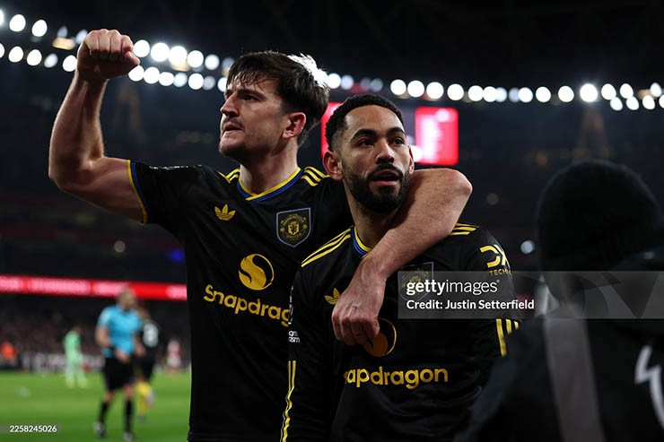
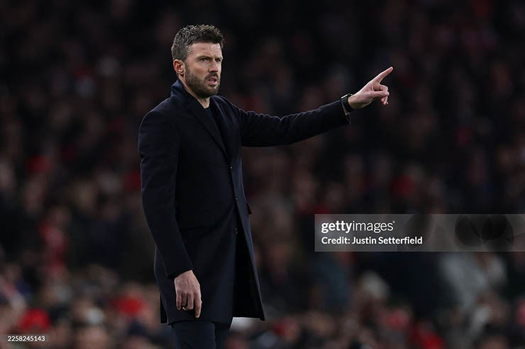
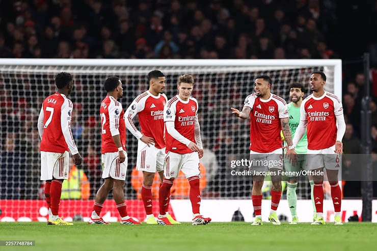

Manchester United đang sống trong những ngày tháng hiếm hoi mà niềm tin quay trở lại Old Trafford nhanh và mạnh đến vậy. Sau vòng đấu gần nhất, "Quỷ đỏ" có trong tay 38 điểm, kém đội đầu bảng Arsenal 12 điểm, và kém Man City cùng Aston Villa 8 điểm. Khoảng cách rất lớn, nhưng Premier League chưa bao giờ là giải đấu dành cho những kịch bản an toàn.

Niềm tin đang trở lại với cầu thủ MUĐiểm cộng lớn nhất của MU lúc này không nằm ở bảng xếp hạng, mà ở tinh thần. Việc đánh bại liên tiếp hai đối thủ mạnh nhất giải đấu theo những cách rất khác nhau cho thấy MU đang sở hữu một phiên bản giàu năng lượng, kỷ luật và quyết đoán hơn hẳn giai đoạn HLV Ruben Amorim còn làm việc tại Old Trafford.
Trước Man City, MU chơi pressing thông minh, phòng ngự tập thể và trừng phạt đối thủ bằng những pha chuyển trạng thái sắc lẹm. Gặp Arsenal, họ lại cho thấy sự lì lợm, bản lĩnh và khả năng chịu áp lực ở những thời điểm then chốt. Đây là những phẩm chất thường chỉ xuất hiện ở các đội bóng đua vô địch thực thụ.
Quan trọng hơn, các cầu thủ MU dưới thời Michael Carrick đang chơi bóng với tâm thế “không còn gì để mất”. Khi kỳ vọng giảm xuống, áp lực cũng theo đó tan biến. Chính trạng thái tinh thần ấy lại giúp MU trở nên nguy hiểm, khó lường hơn bao giờ hết.

Dấu ấn của HLV Carrick là rất lớnSự xuất hiện của Michael Carrick trên băng ghế huấn luyện, dù chỉ với vai trò tạm quyền, đang mang đến một làn gió mới. Carrick không cố gắng áp đặt triết lý phức tạp, mà lựa chọn cách tiếp cận thực dụng: biết mình biết người.
Ông nhanh chóng nhận ra điểm mạnh – yếu của từng cầu thủ, sử dụng họ đúng vai trò và đặt lợi ích tập thể lên hàng đầu. Hệ thống chiến thuật được đơn giản hóa, giúp các cầu thủ chơi tự tin và gắn kết hơn. Những nhân tố lâu nay vốn bị xem là mắt xích yếu dưới thời Amorim lại được trao cơ hội và tỏa sáng (Patrick Dorgu, Kobbie Mainoo), trong khi các trụ cột được giải phóng khỏi những yêu cầu quá tải (Bruno Fernandes được trở lại vị trí sở trường).
Một lợi thế không nhỏ cho MU là các đối thủ chưa kịp “bắt bài” Carrick. Khi dấu ấn chiến thuật còn mới, đối phương buộc phải dè chừng và thăm dò, trong khi MU có thể tận dụng yếu tố bất ngờ để giành lợi thế ở từng trận đấu.

Arsenal còn phải cày ải trên nhiều mặt trậnKhông còn vướng bận các mặt trận cúp, MU hiện chỉ tập trung duy nhất vào Ngoại hạng Anh. Điều này tạo ra sự khác biệt lớn so với Arsenal, Man City hay Aston Villa – những đội vẫn phải căng mình cho cả đấu trường châu Âu lẫn cúp quốc nội.
Lịch thi đấu dày đặc, áp lực xoay tua đội hình và nguy cơ chấn thương là những yếu tố có thể bào mòn bất kỳ ứng viên vô địch nào. Trong khi đó, MU có nhiều thời gian hơn để hồi phục, chuẩn bị chiến thuật và duy trì phong độ ổn định.
Ở Premier League, giai đoạn cuối mùa luôn là nơi các đội bóng “đuối sức” dễ đánh rơi điểm số. Nếu MU duy trì được sự tập trung và tận dụng tốt những cú sảy chân của đối thủ, khoảng cách 8–12 điểm hoàn toàn không phải là điều bất khả thi để san lấp.